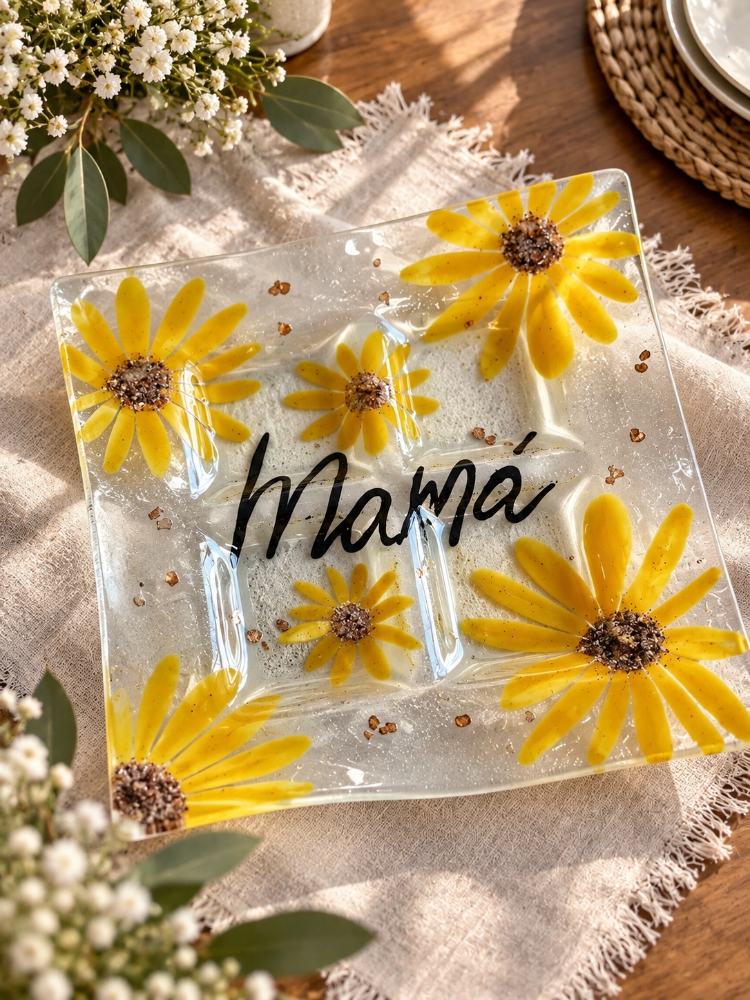
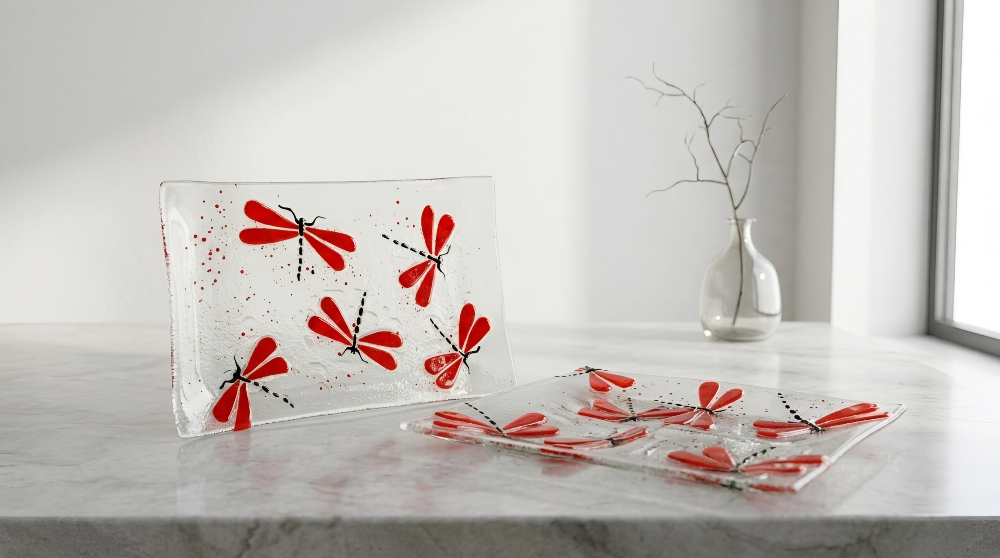
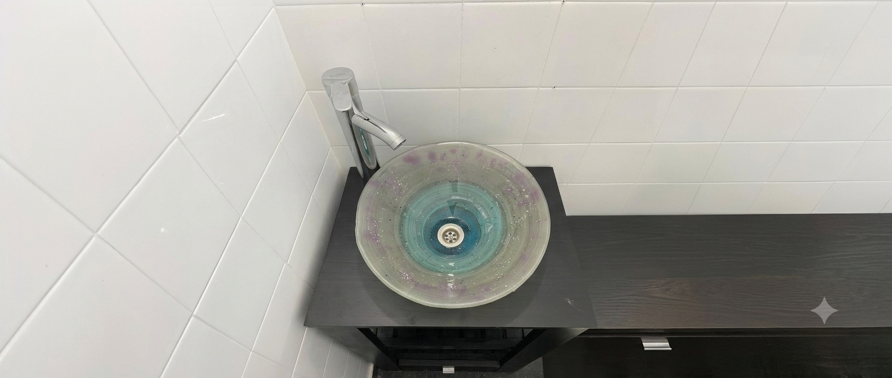
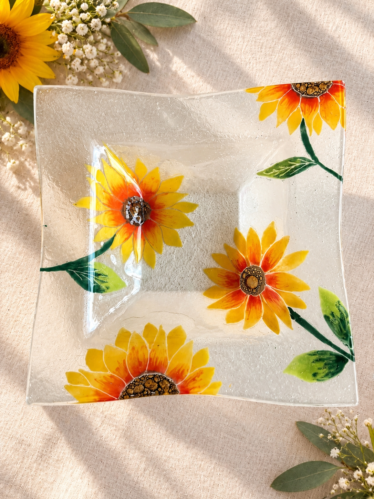
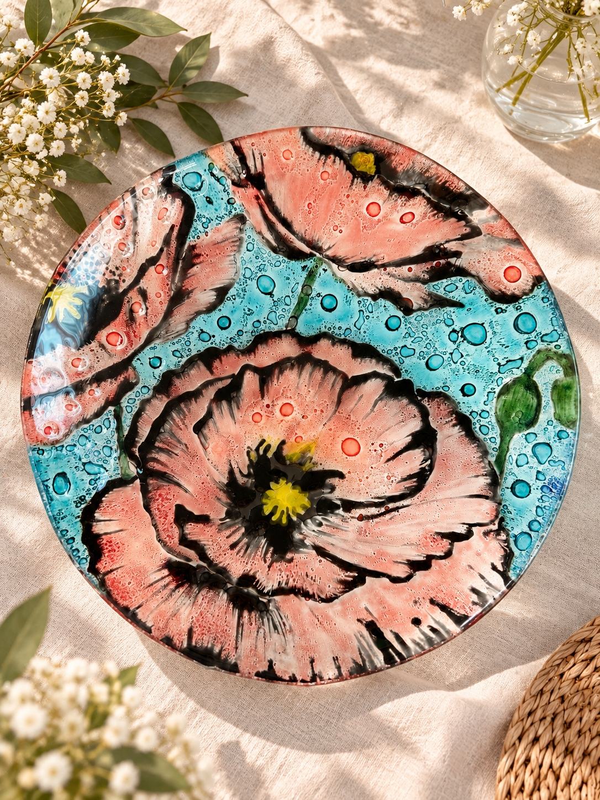
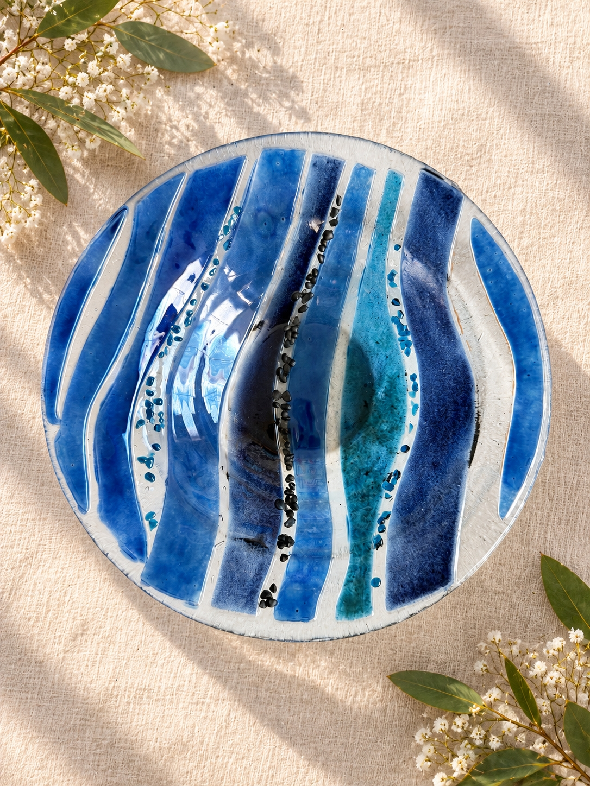
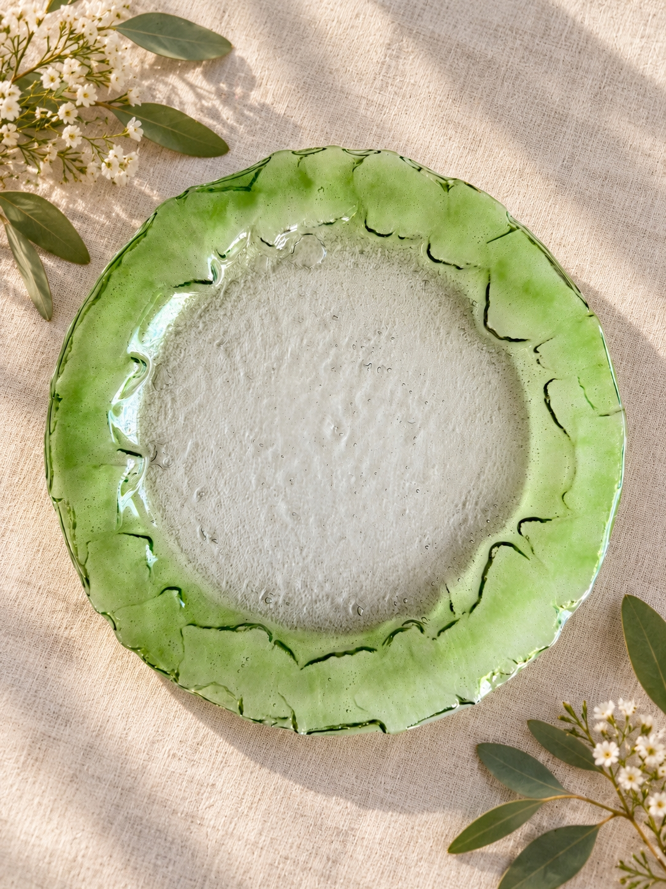
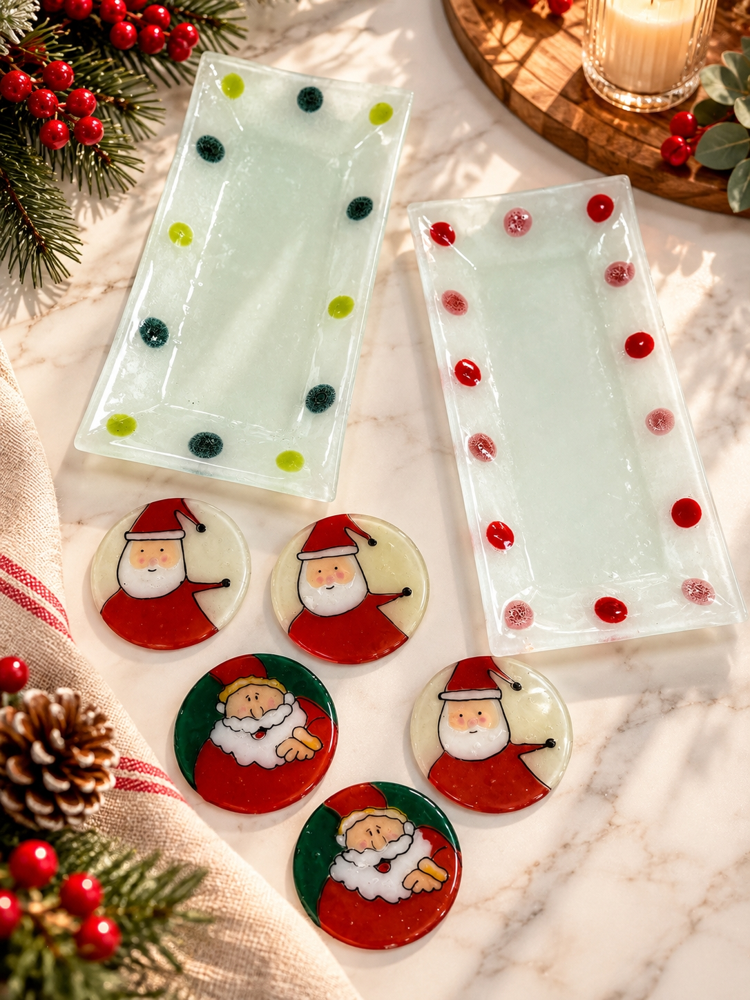
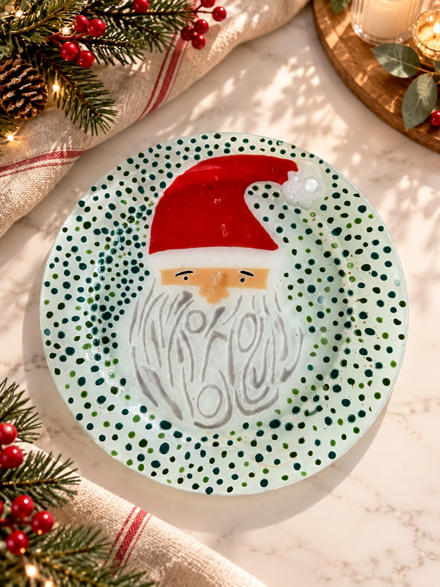
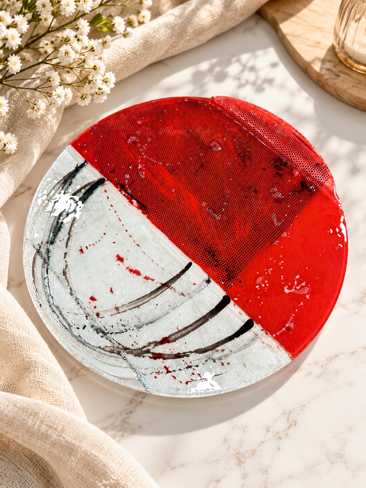

Personalizado
Plato personalizado “Mamá”
Pieza artesanal en vitrofusión personalizada, ideal para regalar en momentos especiales. Puede adaptarse con nombres, frases, colores y diferentes detalles.
Consultar pedido



Piezas artesanales en vidrio
Objetos personalizados hechos a mano que combinan color, textura y transparencia para transformar espacios cotidianos en detalles únicos.
Trabajo personalizado
Cada pieza se realiza de manera artesanal, por eso puede adaptarse en medidas, colores y terminaciones según la ocasión. Este catálogo sirve como muestra de algunos de mis trabajos realizados y como guía para futuros pedidos personalizados.
Catálogo
Estas piezas forman parte de trabajos realizados y modelos de inspiración. Cada pedido puede personalizarse en colores, medidas, formas y detalles.

Personalizado
Pieza artesanal en vitrofusión personalizada, ideal para regalar en momentos especiales. Puede adaptarse con nombres, frases, colores y diferentes detalles.
Consultar pedido
Personalizado
Bandeja artesanal en vidrio con diseño floral. Los colores, formas y detalles pueden adaptarse según el estilo de cada pedido.
Consultar pedido
Decorativo
Pieza decorativa en vitrofusión con diseño floral y una combinación de colores vibrantes. Puede realizarse con distintas paletas y estilos.
Consultar pedido
Decorativo
Diseño artesanal en tonos azules y transparentes, con formas orgánicas que resaltan el efecto del vidrio. Los colores pueden personalizarse.
Consultar pedido
Decorativo
Pieza artesanal de diseño simple y elegante, realizada en vidrio con detalles en tonos verdes. Ideal para decoración o presentación.
Consultar pedido✨ Colección temática

Navidad
Conjunto artesanal de vitrofusión con diseños navideños, ideal para decorar, regalar o acompañar una mesa especial.
Consultar pedido
Navidad
Plato decorativo artesanal con diseño de Papá Noel, pensado para sumar un detalle especial a la decoración navideña.
Consultar pedido
Navidad
Pieza decorativa de vitrofusión con diseño abstracto en tonos rojos, transparentes y oscuros.
Consultar pedidoPróximamente vamos a sumar piezas personalizadas para baño.
Cómo encargar
Cada trabajo se realiza de manera personalizada. El proceso es simple y podemos adaptarlo a tu idea.
Podés inspirarte en alguna de las piezas del catálogo o contarnos qué tenés en mente.
Coordinamos colores, medidas, diseño y detalles para crear una pieza a tu gusto.
Consultanos por WhatsApp para definir los últimos detalles y avanzar con tu pieza.
Pedidos personalizados
Contame cómo imaginás tu pieza y juntos la convertimos en una creación única, hecha especialmente para vos.
Contáctanos
Si querés realizar un pedido personalizado o consultar por alguna pieza, podés comunicarte a través de cualquiera de estos medios.
Av. Maipú 1681
Obera, Misiones
+54 9 3773 43-6905
vitrofusioncynthiakuhn@gmail.com
Cada pieza puede personalizarse en colores, medidas y detalles.